The Gast's
Greetings! Welcome to the webpage I created about myself and my family as a sample to show off some of my work. First off, I'll introduce myself. My name is Tyler Gast, I am 28 years old, and I grew up in Chippewa Falls WI. I graduated from Chippewa Falls Senior High School in 2014. After high school instead of going into school I went and got a job and started a family. Now, I am in a position in life where I was able to go back to school and pursue a career I really enjoy. I am graduating with honors from the IT-Software Development program at Chippewa Valley Technical College on December 12th 2024. Throughout my time in the program at CVTC I have really developed a passion for web development and computer programming(no pun intended). I am eager and motivated to start my career in the industry. As you browse the page you will learn more about myself as well as my family, and the things we like to do for fun.
Meet My Family
This is us! My little family is made up my beautiful wife Jessica, and our two awesome kids, Aspen(5) and Oden(3). My wife and I started "dating" when we were just 14 years old. We moved into our first apartment in Eau Claire WI, while my wife was still a senior in high school(She graduated a year after I did in 2015). That is the apartment we came home too after we got married in 2017. By 2019 we had moved back to Chippewa Falls WI, and in May of that year we welcomed Aspen into our family and a short 22 months later we welcomed our boy Oden into the world. Today, we live in our first house in Fall Creek WI, my wife is a hairstylist at Shear Experience in Eau Claire, Aspen started kindergarten this year, and were just living the best life we can.
 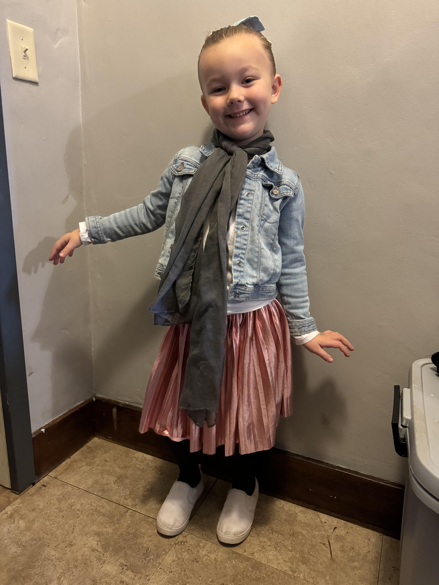
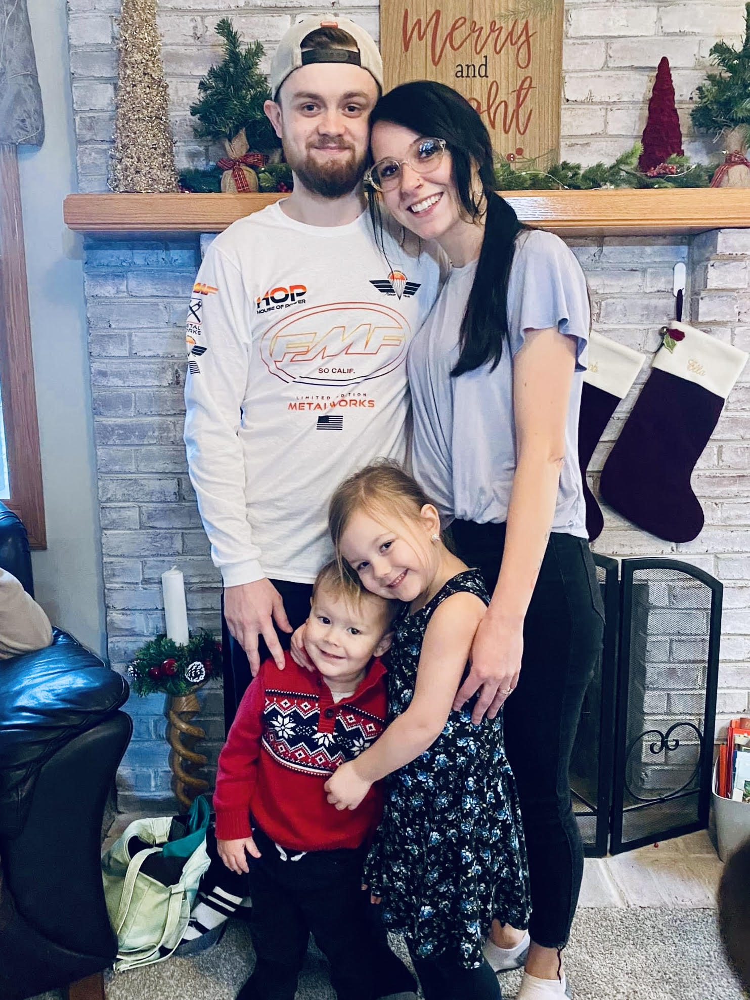
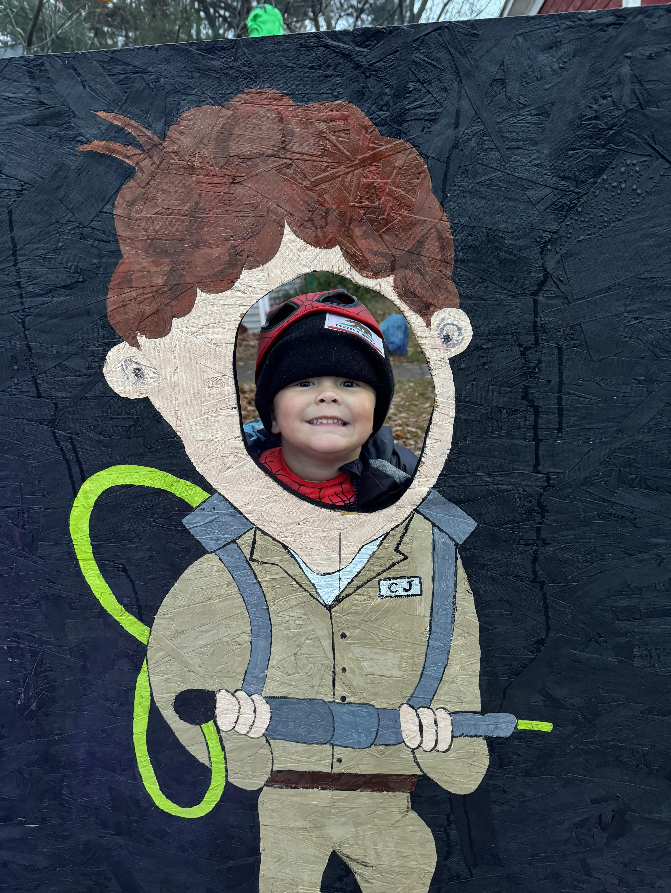
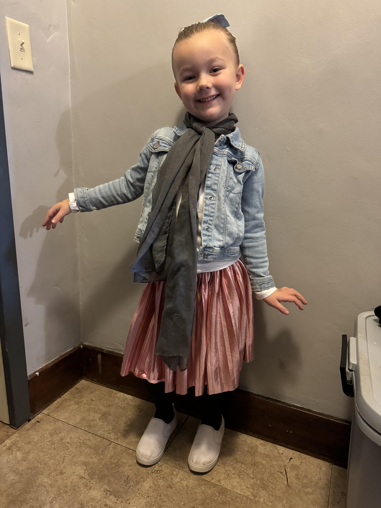
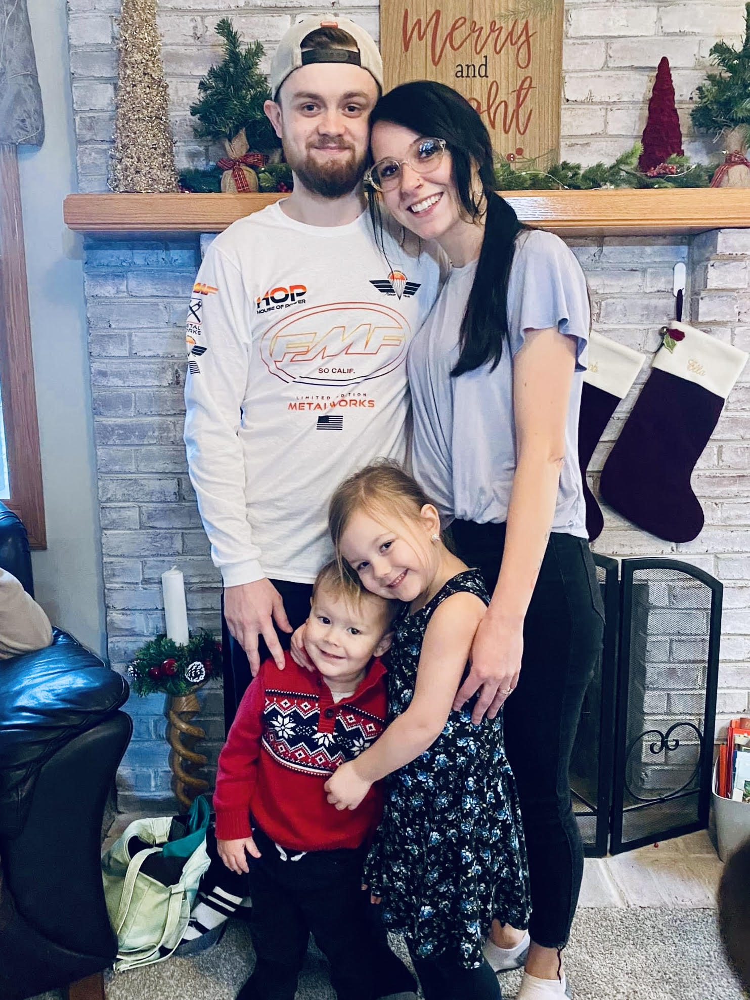
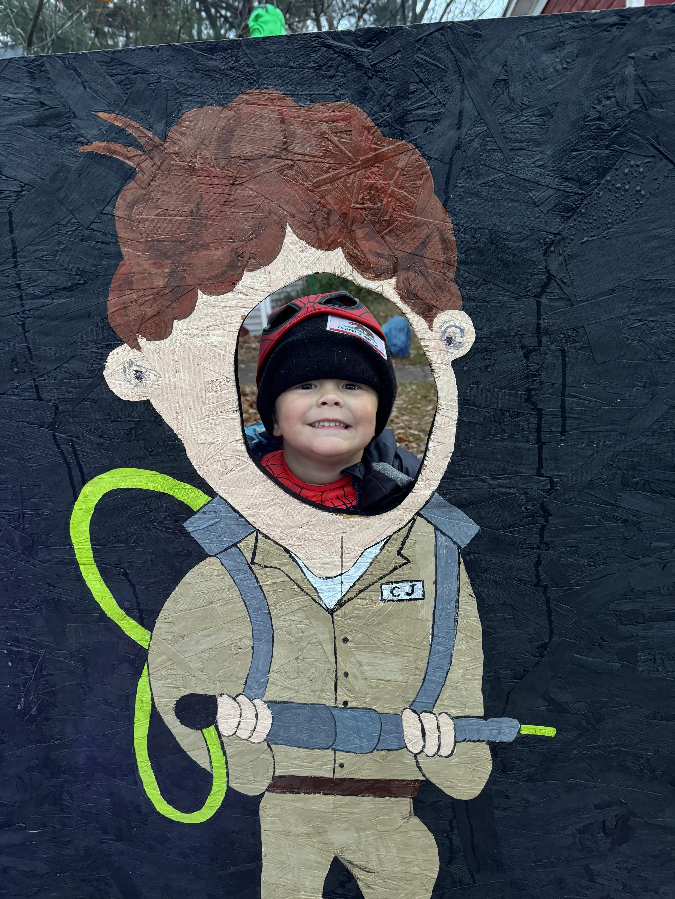
Our Pets
Introducing Nova(Left) and Arlo(right) and Gracie! Gracie is our cat, and she is 16 years old. She sticks to herself most of the time except for when her bowl is needing to be filled with food. Growing up, my family always had rescue dogs so when I had my own family I knew that I wanted to rescue dogs as well. We rescued both of our dogs from the Clark County Humane Society. We got Nova in April 2023 as a little puppy, and she has grown to be little bigger than expected. But that's okay, we love our big girl. We then got Arlo earlier this year in March 2024 as a puppy as well. Opposite to Nova, Arlo has remained relatively the same size as the day we got him. You can find them most of the time cuddled together on the couch or chasing each-other none stop around the backyard.

 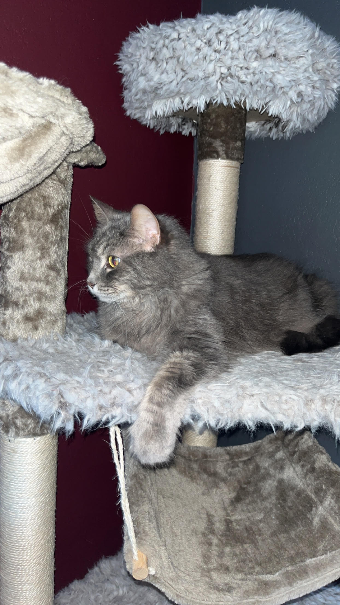
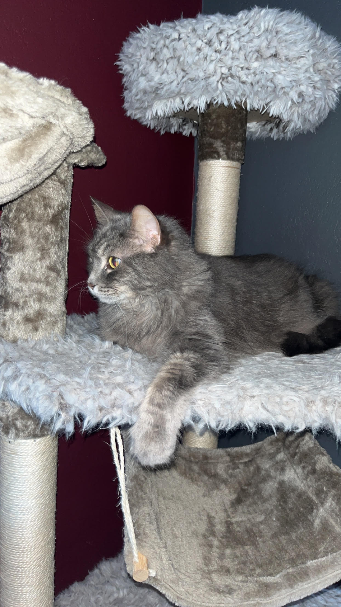
What we do for fun
We love adventures. From camping and riding dirt bikes to going to the beach to play in the water and sand, we're always looking to have a good time together. I have raced motocross since the age of 5 and still ride to this day. I can't wait for the day when I can go riding and have my kids riding with me. Aspen already is on her way after learning to ride her two-wheeled bike last year, and Oden isn't far behind already. Other things we like to do are go to the playground, go on bike rides, build with legos, and have bonfires and roast marshmallows. As the kids get older, I look foward to making new memories and adding new hobbies to our list of fun things we love to do.
 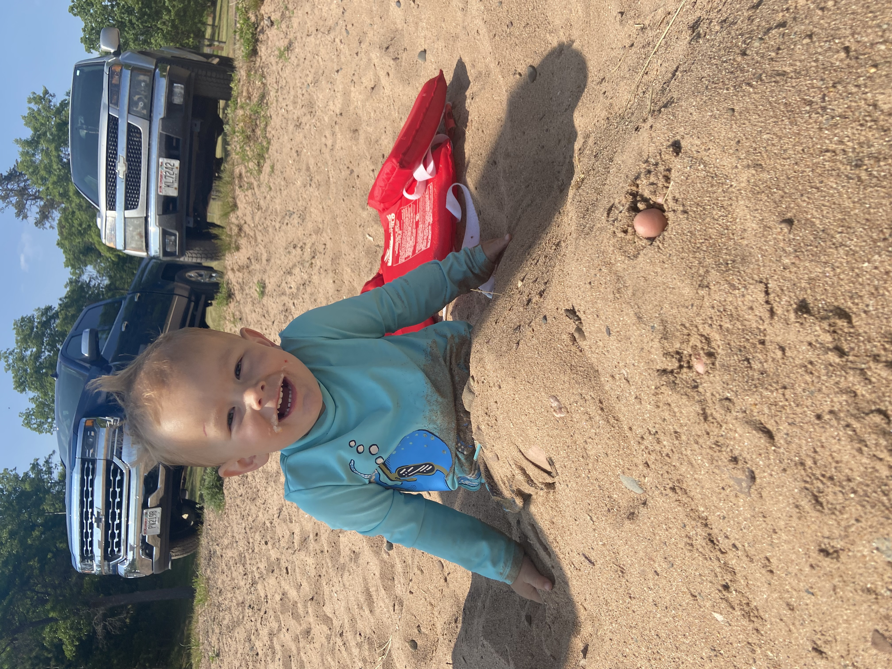
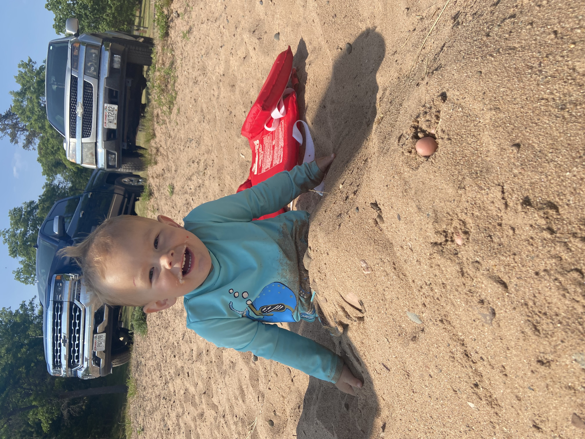
 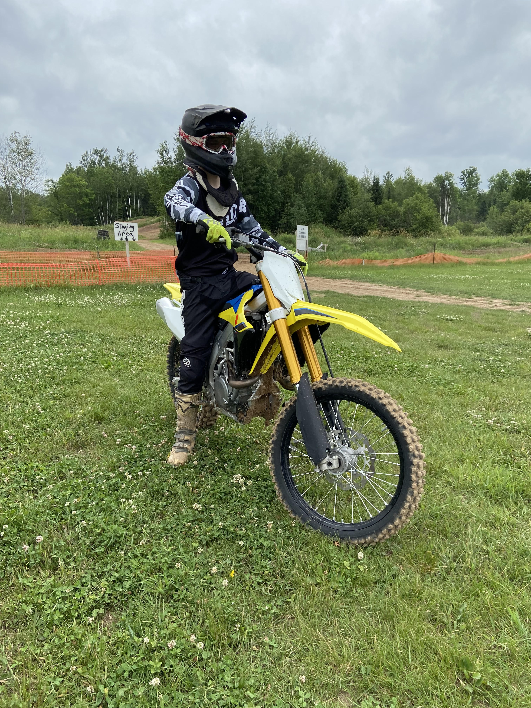
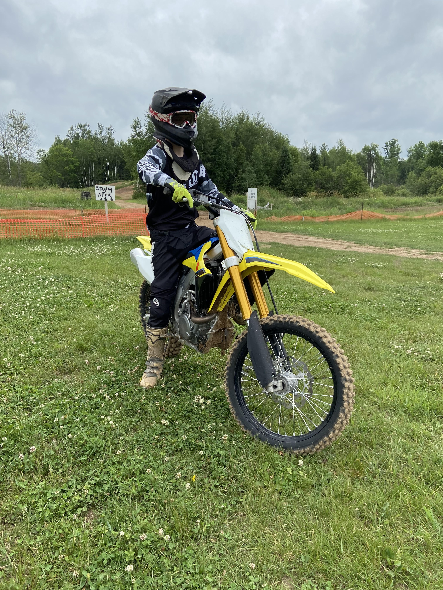